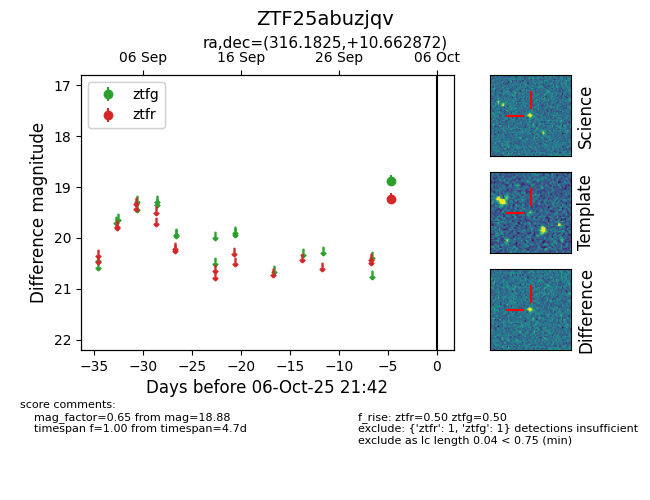

FINK: ZTF25abuzjqv
Lasair: ZTF25abuzjqv
ALeRCE: ZTF25abuzjqv
ZTF25abuzjqv (ztf,fink)
equatorial (ra, dec) = (316.1825,+10.66287)
galactic (l, b) = (59.5120,-23.33521)

last ztfg=18.88, ztfr=19.23
1 ztfg, 1 ztfr detections